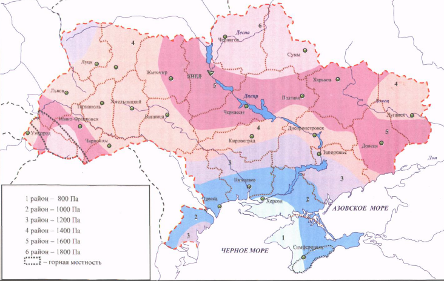

8 СНІГОВІ НАВАНТАЖЕННЯ
8.12 Коефіцієнт надійності за експлуатаційним розрахунковим значенням снігового навантаження визначається за табл. 8.3 залежно від частки часу, протягом якої можуть порушуватися умови другого граничного стану. Значення приймається за нормами проектування конструкцій або встановлюється завданням на проектування залежно від їхнього призначення, відповідальності та наслідків виходу за граничний стан. Для об'єктів масового будівництва допускається приймати $\eta = 0,02$ Згідно таблиці 8.3 $\gamma_{fe} = {{gamma_fe=0.49}}$
згідно ДБН В.1.2-14:2018 Загальні принципи забезпечення надійності та конструктивної безпеки будівель і споруд
| Найменування | Орієнтовне значення розрахункового строку експлуатації Tef, років |
|---|---|
| {{year}} |
8.11 Коефіцієнт надійності за граничним розрахунковим значенням снігового навантаження визначається залежно від заданого середнього періоду повторюваності Тef за табл. 8.1.
$$\gamma_{fm} = {{gamma_fm}}$$
8.10 Коефіцієнт Calt враховує висоту Н (у кілометрах) розміщення будівельного об'єкта над рівнем моря $C_{alt} = 1$
8.9 Коефіцієнт Се враховує вплив особливостей режиму експлуатації на накопичення снігу на покрівлі (очищення, танення тощо) і встановлюється завданням на проектування. При відсутності даних про режим експлуатації покрівлі коефіцієнт Се допускається приймати таким, що дорівнює одиниці. $C_e=1$
$\alpha$= кут нахилу (градусів)
8.7 Коефіцієнт визначається за додатком Ж залежно від форми покрівлі і схеми розподілу снігового навантаження, при цьому проміжні значення коефіцієнта слід визначати лінійною інтерполяцією. $\mu = {{mu}}$
8.6 Коефіцієнт С визначається за формулою $$C = \mu \times C_e \times C_alt = {{mu}} \times 1 \times 1 = {{C = mu}} $$
8.5 Характеристичне значення снігового навантаження S0 визначається залежно від снігового району по карті (рис. 8.1)  або за додатком Е.
$S_0$= Па (10 Па = 1 $\frac{ кгс }{ м^2 }$)
Схема 1. Будинки з односхилими та двосхилими покриттями
8.4 Квазіпостійне розрахункове значення обчислюється за формулою $$S_p = (0.4 \times S_0 - \bar{S}) \times C = (0.4 \times {{S_0}} - \bar{ {{S}} }) \times {{C}} = {{S_p=Math.round((0.4*S_0-S)*C*100)/100}} Па$$ де $\bar{S} = 160 Па$
8.3 Експлуатаційне розрахункове значення обчислюється за формулою $$S_b = \gamma_{fe} \times S_0 \times C = {{gamma_fe}} \times {{S_0}} \times {{C}} = {{S_b = Math.round(gamma_fe*S_0*C*100)/100}} Па $$
8.2 Граничне розрахункове значення снігового навантаження на горизонтальну проекцію покриття (конструкції) обчислюється за формулою $$S_m=\gamma_{fm} \times S_0 \times C = S_m={{gamma_fm}} \times {{S_0}} \times {{C}} = {{S_m = Math.round(gamma_fm*S_0*C*100)/100}}$$
| Вид сігового навантаження | 1 × μ | 0,75 × μ | 1,25 × μ |
|---|---|---|---|
| Квазіпостійне, Па | {{S_p}} | {{Math.round(S_p*0.75*10)/10}} | {{Math.round(S_p*1.25*10)/10}} |
| Експлуатаційне, Па | {{S_b}} | {{Math.round(S_b*0.75*10)/10}} | {{Math.round(S_b*1.25*10)/10}} |
| Граничне розрахункове значення, Па | {{S_m}} | {{Math.round(S_m*0.75*10)/10}} | {{Math.round(S_m*1.25*10)/10}} |
10 Па = 1 $\frac{ кгс }{ м^2 }$